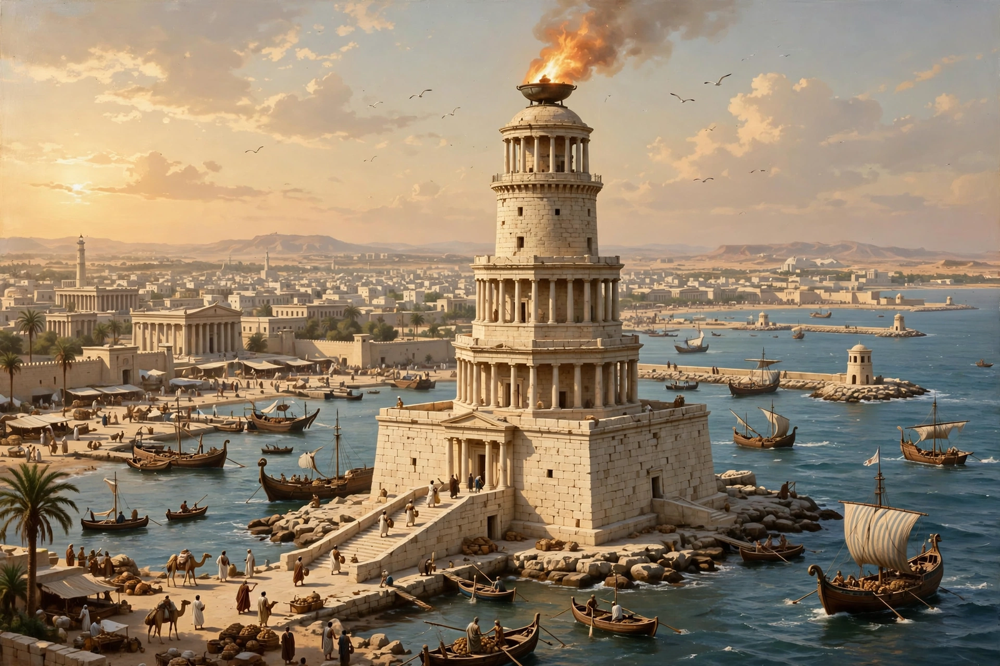

Lighthouse of Alexandria
From Wikipedia, the free encyclopedia

The Lighthouse of Alexandria, also called the Pharos of Alexandria, was a lighthouse built by the Ptolemaic Kingdom between about 280 and 247 BC on the island of Pharos at Alexandria, Egypt. Standing perhaps 100 metres (330 ft) or more, it was among the tallest human-made structures for centuries and was counted one of the Seven Wonders of the Ancient World; its name became the word for 'lighthouse' in many languages (phare, faro).
Construction
Commissioned by Ptolemy I Soter and completed under Ptolemy II Philadelphus, the tower was designed by the architect Sostratus of Cnidus (according to tradition). Ancient descriptions and coins show three tiers — a square base, an octagonal middle and a cylindrical top — crowned by a statue and a mirror or fire whose light guided ships into Alexandria's harbour, the busiest port of the Hellenistic world.
Destruction
The Pharos survived, repeatedly repaired, for over a millennium; Arab writers described it in detail. Earthquakes progressively ruined it — notably in 956, 1303 and 1323 — and by 1480 the Mamluk sultan Qaitbey built his citadel on the site, reusing its stones. Underwater archaeology since the 1990s has recovered colossal blocks and statues from the harbour floor.
Legacy
The Pharos defined the lighthouse type — reflected in the Roman lighthouse at Dover and in Islamic minarets — and stands in lists of the Seven Wonders as the only one with a practical function. Reconstructions vary widely because no precise measurements survive.